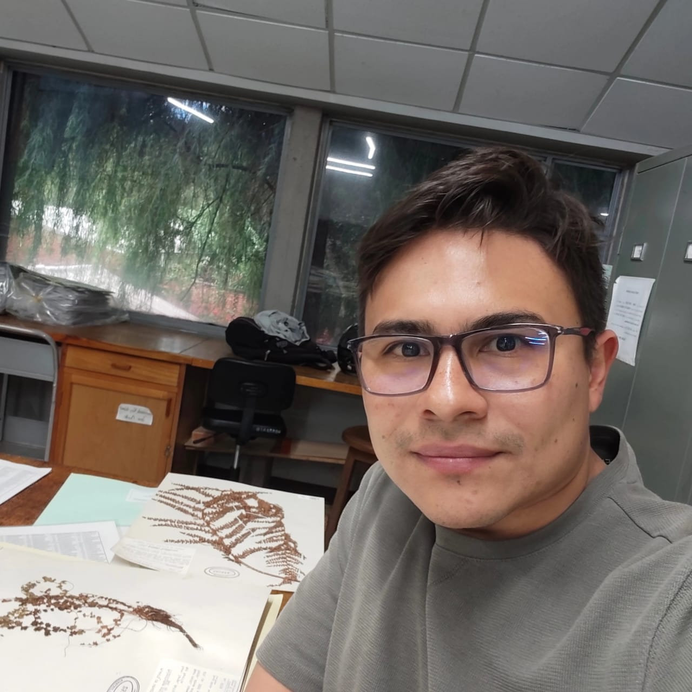
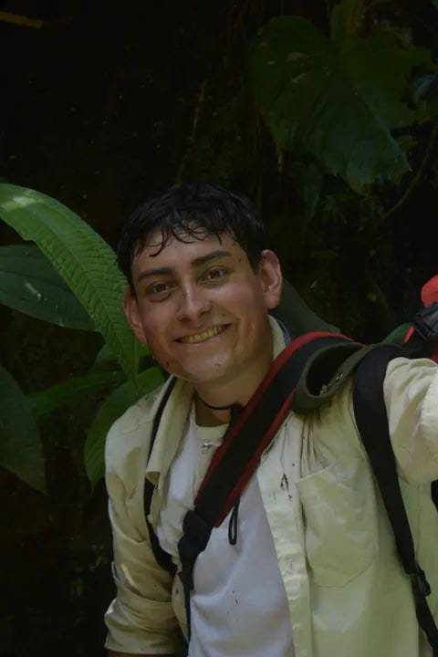

Con énfasis en QGIS
Aprende los fundamentos de los Sistemas de Información Geográfica y desarrolla habilidades prácticas para trabajar con información espacial utilizando QGIS.
El curso básico sobre Sistemas de Información Geográfica (SIG) con énfasis en QGIS tiene como objetivo capacitar a estudiantes en distintos niveles de formación y profesionales del área de la botánica y áreas afines en el uso de los SIG para la creación, edición, análisis y representación de información espacial, georreferenciación de etiquetas de herbario, mapas convencionales y elaboración de productos cartográficos
Está dirigido especialmente a personas sin conocimientos previos en Sistemas de Información Geográfica, quienes podrán adquirir las bases necesarias para trabajar con datos geoespaciales en contextos académicos, investigativos y laborales.
La metodología combina clases teóricas con ejercicios prácticos en QGIS y actividades relacionadas con la adquisición, procesamiento, análisis y representación de información espacial.
No. El curso está diseñado para participantes que están comenzando a trabajar con Sistemas de Información Geográfica. NO NECESITA EXPERIENCIA PREVIA
Durante el curso conocerás conceptos fundamentales y desarrollarás habilidades prácticas para trabajar con información geográfica.
Conceptos básicos, componentes de los SIG y aplicaciones en investigación y trabajo profesional.
Instalación, interfaz, proyectos y herramientas del software.
Capas vectoriales y ráster, formatos de datos y organización de información espacial.
Coordenadas, sistemas de referencia y conceptos fundamentales de proyección cartográfica.
Creación y edición de capas, tablas de atributos y modificación de información espacial.
Representación visual de los datos y elaboración de mapas informativos.
Configuración de equipos, toma de coordenadas, descarga y procesamiento de datos.
Georreferenciación de registros de herbario y mapas convencionales.
Importación y manejo de diferentes fuentes de información geográfica.
Diseño y exportación de salidas gráficas con los elementos esenciales de un mapa.
Introducción a los Sistemas de Información Geográfica, conceptos fundamentales, sistemas de coordenadas, proyectos e interfaz de QGIS y ejercicio práctico sobre georeferenciación.
Trabajo con capas vectoriales y ráster, atributos, edición y representación cartográfica y ejercicio práctico sobre creación de mapas.
Ejercicio práctico orientado al uso de equipos GPS, adquisición de información espacial y procesamiento de datos.
Realizaremos una actividad práctica orientada al uso y configuración de equipos GPS, descarga y procesamiento de datos y elaboración de una salida gráfica con la información obtenida.
Universidad de Antioquia / Jardín Botánico de MedellínTrabajaremos con etiquetas antiguas de herbario y mapas convencionales para transformar información histórica en datos espaciales útiles para estudios de distribución, biodiversidad y conservación.
Ejercicio práctico en QGIS
Información sobre el instructor. Aquí puedes colocar una breve descripción de su formación, experiencia, líneas de investigación o experiencia relacionada con SIG y QGIS.

Información sobre el instructor. Aquí puedes colocar una breve descripción de su formación, experiencia, líneas de investigación o experiencia relacionada con SIG y QGIS.
2–4 de octubre de 2026
8:00 a. m. – 12:00 m.
2:00 p. m. – 5:00 p. m.
Estudiantes: $110.000 COP
Profesionales: $140.000 COP
Reserva tu lugar en el curso básico de SIG con énfasis en QGIS.
Regístrate ahora →